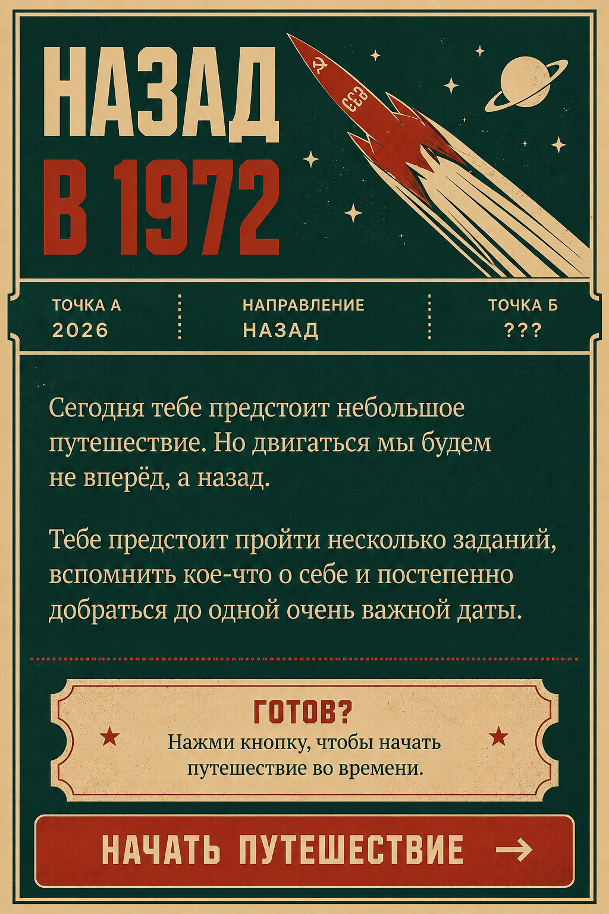

<!doctype html>
<html lang="ru">
<head>
<meta charset="utf-8">
<meta name="viewport" content="width=device-width,initial-scale=1,viewport-fit=cover">
<meta name="theme-color" content="#f4f1e8">
<title>Назад в 1972</title>

<style>
:root{
  --cream:#f0d09b;--paper:#f3e4c6;--paper2:#ead9b7;--red:#be2f22;--red2:#d4492e;
  --green:#294943;--green2:#1f3a36;--ink:#1f2623;--muted:#6f6a5e;--line:#aa9574;
  --yellow:#e9b942;--shadow:0 12px 26px rgba(45,35,22,.10)
}
*{box-sizing:border-box}
html,body{margin:0;min-height:100%;background:#182a27;color:var(--ink);font-family:Arial,Helvetica,sans-serif}
button,input{font:inherit}
button{-webkit-tap-highlight-color:transparent}
.app{width:100%;max-width:460px;min-height:100vh;margin:auto;position:relative;overflow:hidden;background:#f5efe1;color:var(--ink);transition:background .65s ease,color .65s ease}
.app:after{content:"";position:absolute;inset:0;pointer-events:none;opacity:.12;mix-blend-mode:multiply;background-image:radial-gradient(rgba(35,31,24,.45) .45px,transparent .7px);background-size:4px 4px;z-index:2}
.app[data-era="modern"]{--bg:#efe7d4;--surface:#f8f1e3;--accent:#294943;--accent2:#be2f22;--text:#202724;--border:#8d856f;background:var(--bg)}
.app[data-era="warm"]{--bg:#ead8b5;--surface:#f2e3c8;--accent:#a52b22;--accent2:#294943;--text:#28271f;--border:#9e8560;background:var(--bg)}
.app[data-era="paper"]{--bg:#e5cf9f;--surface:#efddb9;--accent:#b52b20;--accent2:#294943;--text:#24231d;--border:#8d7250;background:var(--bg)}
.app[data-era="1972"]{--bg:#e2c994;--surface:#eeddb9;--accent:#a9251f;--accent2:#294943;--text:#201f19;--border:#7f6849;background:var(--bg);font-family:Georgia,"Times New Roman",serif}
.screen{position:relative;z-index:3;min-height:100vh;padding:18px 18px 26px;display:flex;flex-direction:column;animation:pageIn .42s cubic-bezier(.2,.75,.3,1)}
.hidden{display:none!important}
@keyframes pageIn{from{opacity:0;transform:translateY(14px)}to{opacity:1;transform:none}}
.top{display:flex;align-items:flex-start;justify-content:space-between;gap:12px;margin-bottom:24px;padding-bottom:11px;border-bottom:2px solid var(--accent)}
.route-head{min-width:0;flex:1}.era{font-size:11px;font-weight:900;letter-spacing:.16em;text-transform:uppercase;color:var(--accent);line-height:1.25}
.timeline{height:4px;background:rgba(0,0,0,.12);margin-top:8px;overflow:hidden}.timeline i{display:block;height:100%;background:var(--accent2);transition:width .55s ease}
.menu{width:38px;height:32px;border:2px solid var(--accent);border-radius:0;background:transparent;font-size:20px;line-height:1;color:var(--accent);font-weight:900}
h1,h2,h3,p{margin:0}h1,h2,.year,.question{font-family:"Arial Black",Impact,Arial,sans-serif;text-transform:uppercase}
h1{font-size:47px;line-height:.88;letter-spacing:-.045em}h2{font-size:31px;line-height:.98;letter-spacing:-.035em}h3{font-size:20px;line-height:1.15}
.lead{font-size:17px;line-height:1.52;color:#4c493f}.small{font-size:13px;line-height:1.45;color:var(--muted)}.spacer{flex:1}.stack{display:flex;flex-direction:column;gap:14px}.center{text-align:center;align-items:center;justify-content:center}
.card{background:var(--surface);border:2px solid var(--border);border-radius:0;padding:18px;box-shadow:5px 5px 0 rgba(41,73,67,.13);position:relative}
.app[data-era="paper"] .card,.app[data-era="1972"] .card{box-shadow:4px 4px 0 rgba(128,76,48,.10)}
.question{font-size:23px;line-height:1.18;letter-spacing:-.025em;text-transform:none}
.btn{width:100%;border:2px solid var(--accent);border-radius:0;padding:15px 17px;background:var(--accent);color:#f6e9ce;font-family:"Arial Black",Impact,Arial,sans-serif;font-size:14px;letter-spacing:.055em;text-transform:uppercase;cursor:pointer;box-shadow:4px 4px 0 var(--accent2);transition:transform .14s ease,box-shadow .14s ease}
.btn:active{transform:translate(3px,3px);box-shadow:1px 1px 0 var(--accent2)}.btn.alt{background:transparent;color:var(--accent);box-shadow:none}
.choices{display:grid;gap:9px}.choice{text-align:left;background:transparent;border:2px solid var(--border);border-radius:0;padding:14px 15px;font-weight:800;color:var(--text);position:relative;transition:.18s ease}.choice:before{content:"";display:inline-block;width:9px;height:9px;border:2px solid var(--accent);margin-right:10px;vertical-align:1px}.choice.wrong{animation:shake .3s;border-color:var(--red)}.choice.correct{border-color:var(--green);background:rgba(41,73,67,.12)}.choice.correct:before{background:var(--green)}
@keyframes shake{25%{transform:translateX(-4px)}75%{transform:translateX(4px)}}
input{width:100%;border:2px solid var(--border);background:rgba(255,248,232,.5);border-radius:0;padding:15px 14px;font-size:16px;color:var(--text);outline:none;min-height:50px}input:focus{border-color:var(--accent);box-shadow:inset 0 0 0 1px var(--accent)}
.feedback{min-height:24px;font-size:13px;font-weight:900;letter-spacing:.04em;text-transform:uppercase}.ok{display:inline-block;color:var(--green);border:2px solid var(--green);padding:5px 8px;transform:rotate(-1deg);animation:stamp .28s ease}.bad{color:#a12921}@keyframes stamp{from{opacity:0;transform:scale(1.35) rotate(-4deg)}to{opacity:1;transform:scale(1) rotate(-1deg)}}
.location{position:relative;background:var(--surface);border:2px solid var(--accent);padding:20px 18px 19px;margin:3px 0;box-shadow:5px 5px 0 rgba(190,47,34,.18)}
.location:before,.location:after{content:"";position:absolute;top:50%;width:14px;height:28px;background:var(--bg);border:2px solid var(--accent);transform:translateY(-50%);border-radius:50%}.location:before{left:-9px;border-left:0}.location:after{right:-9px;border-right:0}.location .label{font-family:"Arial Black",Impact,Arial,sans-serif;font-size:10px;letter-spacing:.18em;color:var(--accent);margin-bottom:8px;text-transform:uppercase}.location strong{font-family:Georgia,"Times New Roman",serif;font-size:23px;line-height:1.16}
.code input{text-align:center;font-family:"Courier New",monospace;font-size:29px;letter-spacing:.30em;font-weight:900;background:#eee0bd;border:2px dashed var(--accent)}
.year{font-size:88px;line-height:.9;font-weight:900;letter-spacing:-.07em;color:var(--accent);text-shadow:3px 3px 0 rgba(190,47,34,.16)}
.divider{height:2px;background:var(--accent);margin:8px 0}.notice{padding:15px 14px;border-left:5px solid var(--accent);border-top:1px solid var(--border);border-bottom:1px solid var(--border);font-family:Georgia,"Times New Roman",serif;font-size:16px;line-height:1.48;background:rgba(255,247,225,.32)}
.eyebrow,.big-label{font-family:"Arial Black",Impact,Arial,sans-serif;font-size:10px;letter-spacing:.17em;font-weight:900;text-transform:uppercase;color:var(--accent)}
.photo{width:100%;min-height:260px;background:#c7b692;display:grid;place-items:center;overflow:hidden;border:8px solid #efe1c4;outline:2px solid var(--border);box-shadow:5px 7px 0 rgba(84,63,39,.16);transform:rotate(-.5deg)}.photo img{display:block;width:100%;height:auto;max-height:430px;object-fit:contain;filter:sepia(.25) contrast(.96) saturate(.82)}.photo span{padding:34px 22px;text-align:center;font:900 12px/1.5 "Courier New",monospace;letter-spacing:.09em;color:#655d4d}
.date-grid{display:grid;grid-template-columns:1fr 1fr 1.55fr;gap:7px}.date-grid input{text-align:center;font-family:"Courier New",monospace;font-size:22px;font-weight:900}
.final-copy{font-family:Georgia,"Times New Roman",serif;font-size:18px;line-height:1.58}.result{font-size:18px;line-height:1.5}
.overlay{position:fixed;inset:0;background:rgba(17,31,28,.72);display:grid;place-items:center;padding:20px;z-index:30}.modal{width:min(420px,100%);background:#f0ddb8;border:3px solid var(--green);padding:20px;box-shadow:8px 8px 0 rgba(0,0,0,.18)}
/* стартовый плакат — точное визуальное воспроизведение макета */
.start-screen{background:#e7c68e;padding:0;display:block;min-height:100vh;overflow:auto}
.start-exact{position:relative;width:100%;max-width:460px;margin:0 auto;background:#e7c68e;line-height:0}
.start-exact img{display:block;width:100%;height:auto;user-select:none;-webkit-user-drag:none}
.start-hotspot{position:absolute;left:5.8%;right:5.8%;bottom:2.0%;height:8.2%;border:0;background:transparent;color:transparent;cursor:pointer;z-index:5;border-radius:12px;-webkit-tap-highlight-color:transparent}
.start-hotspot:focus-visible{outline:3px solid #f3d59e;outline-offset:-6px}
.start-reset{position:absolute;right:3.1%;top:1.7%;z-index:6;width:34px;height:34px;border:0;background:transparent;color:transparent;opacity:0;cursor:pointer}
@media(max-width:360px){.start-hotspot{bottom:2.0%;height:8.5%}}

/* ===== V5: единая плакатная система для всех последующих экранов ===== */
.screen:not(.start-screen){
  background:
    radial-gradient(circle at 12% 8%, rgba(240,208,155,.16) 0 1px, transparent 1.8px),
    radial-gradient(circle at 82% 16%, rgba(240,208,155,.12) 0 1px, transparent 1.8px),
    radial-gradient(circle at 62% 78%, rgba(240,208,155,.10) 0 1px, transparent 1.8px),
    var(--green2);
  color:var(--cream);
  border:10px solid var(--cream);
  outline:3px solid var(--green2);
  outline-offset:-16px;
  padding:30px 28px 34px;
}
.screen:not(.start-screen)::before{
  content:"";position:absolute;inset:20px;border:2px solid rgba(240,208,155,.95);pointer-events:none;z-index:-1;
}
.screen:not(.start-screen)::after{
  content:"✦";position:absolute;right:34px;bottom:28px;color:rgba(240,208,155,.65);font-size:18px;pointer-events:none;
}
.screen:not(.start-screen) .top{
  margin:0 0 22px;padding:0 0 14px;border-bottom:2px solid var(--cream);align-items:center;
}
.screen:not(.start-screen) .route-head{display:grid;grid-template-columns:1fr;gap:8px}
.screen:not(.start-screen) .era{color:var(--cream);font-family:"Arial Black",Impact,Arial,sans-serif;font-size:12px;letter-spacing:.18em}
.screen:not(.start-screen) .timeline{height:6px;background:rgba(240,208,155,.24);border:1px solid rgba(240,208,155,.65)}
.screen:not(.start-screen) .timeline i{background:var(--red2)}
.screen:not(.start-screen) .menu{border-color:var(--cream);color:var(--cream);background:transparent}
.screen:not(.start-screen) .eyebrow,
.screen:not(.start-screen) .big-label{color:var(--cream);font-size:11px;letter-spacing:.2em}
.screen:not(.start-screen) h1,
.screen:not(.start-screen) h2,
.screen:not(.start-screen) h3,
.screen:not(.start-screen) .question{color:var(--cream)}
.screen:not(.start-screen) h1{font-size:46px;line-height:.9;text-shadow:3px 3px 0 rgba(190,47,34,.48)}
.screen:not(.start-screen) h2{font-size:34px;line-height:.98;text-shadow:2px 2px 0 rgba(190,47,34,.38)}
.screen:not(.start-screen) .lead{color:#f3d8aa;font-family:Georgia,"Times New Roman",serif;font-size:18px;line-height:1.5}
.screen:not(.start-screen) .small{color:#ddc697}
.screen:not(.start-screen) .card{
  background:var(--paper);color:var(--ink);border:2px solid var(--cream);box-shadow:7px 7px 0 var(--red);padding:20px;
}
.screen:not(.start-screen) .card::before{content:"";position:absolute;left:12px;right:12px;top:10px;border-top:1px solid rgba(41,73,67,.28)}
.screen:not(.start-screen) .card .question,
.screen:not(.start-screen) .card h3{color:var(--green2);text-shadow:none}
.screen:not(.start-screen) .card .small{color:#6b5b44}
.screen:not(.start-screen) .choice{background:#f4e1bb;color:var(--green2);border:2px solid var(--green2);font-family:"Arial Black",Impact,Arial,sans-serif;text-transform:uppercase;letter-spacing:.025em}
.screen:not(.start-screen) .choice:before{border-color:var(--red)}
.screen:not(.start-screen) .choice.correct{background:#d8c99d;border-color:var(--green2)}
.screen:not(.start-screen) input{background:#f7e8c8;color:var(--green2);border:2px solid var(--green2);font-weight:800}
.screen:not(.start-screen) input::placeholder{color:#8d7659}
.screen:not(.start-screen) .btn{
  background:var(--red);color:var(--cream);border:2px solid var(--cream);box-shadow:5px 5px 0 #7b1f19;
  font-size:15px;padding:17px 16px;
}
.screen:not(.start-screen) .btn.alt{background:transparent;color:var(--cream);border-color:var(--cream);box-shadow:none}
.screen:not(.start-screen) .notice{
  background:transparent;color:#f2d5a2;border:2px solid var(--cream);border-left:8px solid var(--red2);padding:18px;font-size:18px;
}
.screen:not(.start-screen) .location{
  background:var(--paper);color:var(--green2);border:3px solid var(--red);box-shadow:7px 7px 0 rgba(0,0,0,.18);padding:22px 20px;
}
.screen:not(.start-screen) .location:before,.screen:not(.start-screen) .location:after{background:var(--green2);border-color:var(--red)}
.screen:not(.start-screen) .location .label{color:var(--red);font-size:11px}
.screen:not(.start-screen) .location strong{color:var(--green2);font-size:24px}
.screen:not(.start-screen) .code input{background:#f1d6a1;border:3px dashed var(--red);color:var(--green2);letter-spacing:.34em}
.screen:not(.start-screen) .feedback .bad{color:#8f1f18}
.screen:not(.start-screen) .feedback .ok{color:var(--cream);border-color:var(--cream);background:var(--red);padding:7px 10px}
.screen:not(.start-screen) .year{color:var(--red2);text-shadow:4px 4px 0 var(--cream);font-size:92px}
.screen:not(.start-screen) .divider{background:var(--cream)}
.screen:not(.start-screen) .photo{background:#c7b692;border:10px solid var(--paper);outline:3px solid var(--cream);box-shadow:8px 8px 0 var(--red);transform:rotate(-1deg)}
.screen:not(.start-screen) .date-grid input{background:#f3d8a5;border-color:var(--red)}
.screen:not(.start-screen) .final-copy{color:#f3d8aa;font-size:19px}
.screen:not(.start-screen) .result{color:#f3d8aa}
/* разные эпохи всё ещё слегка меняют ощущение, но не ломают общий стиль */
.app[data-era="modern"] .screen:not(.start-screen){background-color:#203f3a}
.app[data-era="warm"] .screen:not(.start-screen){background-color:#274840}
.app[data-era="paper"] .screen:not(.start-screen){background-color:#234038}
.app[data-era="1972"] .screen:not(.start-screen){background-color:#183631}
.app[data-era="1972"] .screen:not(.start-screen) h1,
.app[data-era="1972"] .screen:not(.start-screen) h2{font-family:"Arial Black",Impact,Arial,sans-serif}
.app[data-era="1972"] .screen:not(.start-screen) .card,
.app[data-era="1972"] .screen:not(.start-screen) .location{background:#ead4a7}
@media(max-width:390px){
  .screen:not(.start-screen){border-width:8px;outline-offset:-14px;padding:26px 22px 30px}
  .screen:not(.start-screen)::before{inset:16px}
  .screen:not(.start-screen) h2{font-size:29px}
  .screen:not(.start-screen) .question{font-size:21px}
  .screen:not(.start-screen) .year{font-size:78px}
}

/* переходы и time warp */
.timewarp{position:fixed;inset:0;z-index:40;background:var(--green2);color:#f1d3a0;display:grid;place-items:center;text-align:center;overflow:hidden}.timewarp:before{content:"";position:absolute;width:170%;height:18px;background:#399a9b;transform:rotate(-31deg);box-shadow:0 26px 0 #399a9b,0 52px 0 #399a9b,0 78px 0 #399a9b}.timewarp:after{content:"";position:absolute;inset:0;background:radial-gradient(circle at 18% 20%,#f1d3a0 0 2px,transparent 3px),radial-gradient(circle at 70% 27%,#f1d3a0 0 2px,transparent 3px),radial-gradient(circle at 42% 76%,#f1d3a0 0 3px,transparent 4px),radial-gradient(circle at 84% 70%,#f1d3a0 0 1px,transparent 2px);background-size:120px 120px;opacity:.7}.timewarp>div{position:relative;z-index:2}.timewarp .small{color:#f1d3a0;font-family:"Courier New",monospace;letter-spacing:.2em}.warp-year{font:900 102px/.9 "Arial Black",Impact,Arial,sans-serif;color:#e34b31;text-shadow:4px 4px 0 #f1d3a0;animation:warpPulse .52s cubic-bezier(.2,.75,.3,1)}@keyframes warpPulse{from{opacity:0;transform:scale(.7) rotate(-2deg)}to{opacity:1;transform:scale(1) rotate(0)}}
.fadeout{animation:fadeout 1s forwards}@keyframes fadeout{to{opacity:0;background:#111}}
/* 1972 становится почти газетой */
.app[data-era="1972"] .top{border-bottom-color:#201f19}.app[data-era="1972"] .era{color:#201f19}.app[data-era="1972"] .card{border-color:#5d4e3a;box-shadow:none}.app[data-era="1972"] .btn{background:#a9251f;color:#f2dfb8;border-color:#a9251f;box-shadow:4px 4px 0 #294943}.app[data-era="1972"] h1,.app[data-era="1972"] h2{font-family:Georgia,"Times New Roman",serif;text-transform:uppercase;letter-spacing:-.04em}.app[data-era="1972"] .year{font-family:Georgia,"Times New Roman",serif;color:#a9251f;text-shadow:none}
@media(max-width:360px){.screen{padding:15px 14px 22px}.start-screen{padding:12px 10px 18px}.start-frame{padding:10px}.start-title{font-size:46px;max-width:74%}.start-copy{font-size:15px;padding:18px 14px 20px}.start-meta span{padding:11px 8px;font-size:8px}.question{font-size:20px}h2{font-size:27px}.year{font-size:76px}.btn{padding:14px 12px}}

/* АНИМАЦИОННЫЕ ПЕРЕХОДЫ МЕЖДУ ПЕРИОДАМИ */
.era-shift-screen{position:fixed;inset:0;z-index:35;background:#173d37;color:#efd09b;display:flex;align-items:center;justify-content:center;overflow:hidden;padding:28px 22px;text-align:center}
.era-shift-screen:before{content:"";position:absolute;inset:14px;border:3px solid #efd09b;box-shadow:inset 0 0 0 3px #173d37,inset 0 0 0 5px #efd09b;pointer-events:none}
.era-shift-screen:after{content:"★   ✦   ★   ✦   ★";position:absolute;top:8%;left:0;right:0;color:#efd09b;font-size:18px;letter-spacing:1.2em;opacity:.75;animation:shiftStars 2.7s linear both}
.era-shift-inner{position:relative;z-index:2;width:min(100%,420px);display:grid;gap:24px;justify-items:center}
.era-shift-kicker{font:900 12px/1.2 "Courier New",monospace;letter-spacing:.26em;text-transform:uppercase;color:#efd09b;opacity:.85}
.era-shift-from,.era-shift-to{font-family:"Arial Black",Impact,Arial,sans-serif;text-transform:uppercase;line-height:.94;letter-spacing:-.035em}
.era-shift-from{font-size:clamp(32px,10vw,52px);color:#efd09b;animation:shiftOut 2.65s cubic-bezier(.2,.7,.2,1) both}
.era-shift-arrow{width:100%;height:8px;position:relative;overflow:hidden}
.era-shift-arrow:before{content:"";position:absolute;left:4%;right:4%;top:3px;height:2px;background:#efd09b;opacity:.45}
.era-shift-arrow:after{content:"";position:absolute;top:0;left:-32%;width:32%;height:8px;background:#bb3525;box-shadow:100px 0 0 #bb3525;animation:shiftLine 1.1s .55s cubic-bezier(.2,.8,.2,1) forwards}
.era-shift-to{font-size:clamp(46px,14vw,76px);color:#bb3525;text-shadow:3px 3px 0 #efd09b;animation:shiftIn 2.65s cubic-bezier(.2,.7,.2,1) both}
.era-shift-note{max-width:320px;font:700 13px/1.5 Georgia,"Times New Roman",serif;color:#efd09b;opacity:0;animation:shiftNote .45s 1.55s ease forwards}
.era-shift-skip{position:absolute;z-index:3;left:50%;bottom:34px;transform:translateX(-50%);border:0;background:transparent;color:#efd09b;font:900 11px/1 "Courier New",monospace;letter-spacing:.14em;text-transform:uppercase;cursor:pointer;padding:12px}
@keyframes shiftOut{0%{opacity:0;transform:translateY(22px)}18%{opacity:1;transform:none}58%{opacity:1;transform:none}82%,100%{opacity:0;transform:translateY(-28px) scale(.96)}}
@keyframes shiftIn{0%,36%{opacity:0;transform:translateY(34px) scale(.9)}62%{opacity:1;transform:translateY(0) scale(1.03)}78%,100%{opacity:1;transform:none}}
@keyframes shiftLine{0%{transform:translateX(0)}100%{transform:translateX(440%)}}
@keyframes shiftNote{to{opacity:.9}}
@keyframes shiftStars{0%{transform:translateX(-8%);opacity:0}18%{opacity:.75}100%{transform:translateX(8%);opacity:.35}}


.back-btn{border:1px solid rgba(239,208,155,.75);background:transparent;color:#efd09b;padding:8px 10px;font:900 10px/1 "Courier New",monospace;letter-spacing:.10em;text-transform:uppercase;cursor:pointer;white-space:nowrap}
.back-btn:hover{background:#efd09b;color:#173d37}
.top-actions{display:flex;align-items:center;gap:8px}
@media(max-width:380px){.back-btn{padding:7px 8px;font-size:9px;letter-spacing:.06em}}
@media(prefers-reduced-motion:reduce){*,*:before,*:after{animation-duration:.001ms!important;animation-iteration-count:1!important;transition-duration:.001ms!important}}


/* V13 — ВСЕ КНОПКИ В СТИЛЕ СОВЕТСКОГО КОНТРОЛЬНОГО БИЛЕТА */
:root{--ticket-cream:#efd09b;--ticket-red:#b53324;--ticket-red-dark:#7b1f19;--ticket-green:#173d37}

/* Основные CTA */
.screen:not(.start-screen) .btn{
  position:relative;
  width:100%;
  min-height:58px;
  padding:17px 26px;
  background:linear-gradient(180deg,#bd3a29 0%,#ab2f22 100%);
  color:var(--ticket-cream);
  border:2px solid var(--ticket-cream);
  border-radius:0;
  clip-path:polygon(12px 0,calc(100% - 12px) 0,100% 12px,100% calc(100% - 12px),calc(100% - 12px) 100%,12px 100%,0 calc(100% - 12px),0 12px);
  box-shadow:0 5px 0 var(--ticket-red-dark);
  font-family:"Arial Black",Impact,Arial,sans-serif;
  font-size:16px;
  line-height:1.12;
  font-weight:900;
  letter-spacing:.055em;
  text-transform:uppercase;
  text-align:center;
}
.screen:not(.start-screen) .btn::before,
.screen:not(.start-screen) .btn::after{
  position:absolute;
  top:50%;
  transform:translateY(-52%);
  color:var(--ticket-cream);
  font-size:17px;
  line-height:1;
  pointer-events:none;
}
.screen:not(.start-screen) .btn::before{content:"★";left:16px}
.screen:not(.start-screen) .btn::after{content:"→";right:16px;font-size:26px}
.screen:not(.start-screen) .btn:active{transform:translateY(3px);box-shadow:0 2px 0 var(--ticket-red-dark)}

/* Светлая вторичная кнопка */
.screen:not(.start-screen) .btn.alt{
  background:var(--ticket-cream);
  color:var(--ticket-red);
  border:2px solid var(--ticket-red);
  box-shadow:none;
}
.screen:not(.start-screen) .btn.alt::before,
.screen:not(.start-screen) .btn.alt::after{color:var(--ticket-red)}

/* Варианты ответов — тоже билетики */
.screen:not(.start-screen) .choice{
  position:relative;
  min-height:54px;
  padding:14px 42px 14px 46px;
  background:#f3deb5;
  color:var(--ticket-green);
  border:2px solid var(--ticket-red);
  border-radius:0;
  clip-path:polygon(10px 0,calc(100% - 10px) 0,100% 10px,100% calc(100% - 10px),calc(100% - 10px) 100%,10px 100%,0 calc(100% - 10px),0 10px);
  box-shadow:3px 3px 0 rgba(123,31,25,.32);
  text-align:left;
}
.screen:not(.start-screen) .choice::before{
  content:"★";
  position:absolute;
  left:17px;
  top:50%;
  width:auto;height:auto;
  margin:0;
  transform:translateY(-52%);
  border:0;
  color:var(--ticket-red);
  font-size:15px;
}
.screen:not(.start-screen) .choice::after{
  content:"";
  position:absolute;
  right:16px;
  top:50%;
  width:8px;height:8px;
  border-top:2px solid var(--ticket-red);
  border-right:2px solid var(--ticket-red);
  transform:translateY(-50%) rotate(45deg);
}
.screen:not(.start-screen) .choice.correct{
  background:#ead29e;
  color:var(--ticket-green);
  border-color:var(--ticket-green);
  box-shadow:3px 3px 0 rgba(23,61,55,.35);
}
.screen:not(.start-screen) .choice.correct::before{content:"✓";color:var(--ticket-green);font-size:20px}
.screen:not(.start-screen) .choice.correct::after{border-color:var(--ticket-green)}

/* Кнопка НАЗАД — заметный билет в той же стилистике */
.back-btn{
  position:relative;
  min-width:112px;
  min-height:42px;
  padding:10px 18px 10px 38px;
  background:#efd09b;
  color:#a92d20;
  border:2px solid #a92d20;
  border-radius:0;
  clip-path:polygon(9px 0,calc(100% - 9px) 0,100% 9px,100% calc(100% - 9px),calc(100% - 9px) 100%,9px 100%,0 calc(100% - 9px),0 9px);
  box-shadow:3px 3px 0 #7d2119;
  font:900 12px/1 "Arial Black",Impact,Arial,sans-serif;
  letter-spacing:.08em;
  text-transform:uppercase;
  cursor:pointer;
  white-space:nowrap;
}
.back-btn::before{content:"←";position:absolute;left:13px;top:50%;transform:translateY(-54%);font-size:21px;font-weight:900}
.back-btn:active{transform:translate(2px,2px);box-shadow:1px 1px 0 #7d2119}

/* ПРОПУСТИТЬ на анимационных переходах */
.era-shift-skip{
  min-width:170px;
  bottom:30px;
  padding:12px 20px;
  background:var(--ticket-cream);
  color:var(--ticket-red);
  border:2px solid var(--ticket-red);
  clip-path:polygon(9px 0,calc(100% - 9px) 0,100% 9px,100% calc(100% - 9px),calc(100% - 9px) 100%,9px 100%,0 calc(100% - 9px),0 9px);
  font:900 11px/1 "Arial Black",Impact,Arial,sans-serif;
  letter-spacing:.08em;
  text-transform:uppercase;
}

/* Меню тоже вписываем в систему */
.screen:not(.start-screen) .menu{
  background:var(--ticket-cream);
  color:var(--ticket-red);
  border:2px solid var(--ticket-red);
  box-shadow:2px 2px 0 var(--ticket-red-dark);
}

@media(max-width:360px){
  .screen:not(.start-screen) .btn{font-size:14px;padding-left:38px;padding-right:42px;min-height:54px}
  .screen:not(.start-screen) .btn::before{left:12px;font-size:14px}
  .screen:not(.start-screen) .btn::after{right:12px;font-size:22px}
  .screen:not(.start-screen) .choice{font-size:12px;padding-left:40px;padding-right:34px}
  .back-btn{min-width:100px;min-height:40px;padding-left:34px;font-size:10px}
}

</style>
</head>
<body><main class="app" id="app" data-era="modern"></main>
<script>
window.addEventListener('error', function(e){
  const el=document.getElementById('app');
  if(el) el.innerHTML='<div style="max-width:720px;margin:40px auto;padding:24px;border:3px solid #a92f20;background:#efd09b;color:#173d37;font-family:Arial,sans-serif"><h2 style="margin-top:0;color:#a92f20">Квест не запустился</h2><p>Обнови страницу. Если экран снова появится, пришли мне скрин — я увижу ошибку вместо белого экрана.</p><small>'+String(e.message||'Неизвестная ошибка')+'</small></div>';
});

const Q={
 universityPhoto:'university-photo.png', universityAge:19,
 codes:{masya:'5837',keys:'2419',sponges:'7642',album:'3185',tools:'9274',backpack:'4516',bedroom:'6831',bread:'2057'},
 physicalWord:'хакасская слива'
};
const steps=[
 {era:'2026',type:'choice',title:'Для начала — простой вопрос',q:'Кто в этой квартире на самом деле считает себя главным хозяином?',opts:['Папа (я)','Вика','Ульяна','Мася'],answer:'Мася',after:'Именно. По документам квартира, может, и не его — но попробуй объяснить это Масе.',loc:'Лежанка Маси',code:'masya'},
 {era:'2026',type:'choice',q:'Что ты обязательно возьмёшь с собой, даже если нужно выйти из дома всего на пять минут?',opts:['Телефон','Кошелёк','Папа (я)','Ключи'],answer:'Ключи',after:'Правильно. Хотя правильнее было бы сказать не «ключи», а огромная связка ключей… Возможно, половина из них уже ничего не открывает. Но рисковать мы не будем.',loc:'На крючке с ключами в коридоре',code:'keys'},
 {era:'Переход',type:'eraShift',from:'ТЕКУЩЕЕ ВРЕМЯ',to:'ВЗРОСЛАЯ ЖИЗНЬ',note:'2026 остаётся позади. Двигаемся дальше назад.'},
 {era:'Взрослая жизнь',type:'text',q:'Сколько лет назад была создана самая крутая компания по производству самых крутых губок?',answers:['29','29 лет','29 лет назад'],after:'Точно. Некоторые вещи с возрастом становятся только лучше. Видимо, губки тоже.',loc:'Кухня, ящик с губками',code:'sponges'},
 {era:'Переход',type:'eraShift',from:'ВЗРОСЛАЯ ЖИЗНЬ',to:'МОЛОДОСТЬ',note:'Работа и взрослые заботы постепенно остаются впереди. Возвращаемся в молодые годы.'},
 {era:'Университет',type:'photo',q:'Сколько тебе здесь лет?',after:'Неплохо. Память пока работает. А фотографии, между прочим, помнят ещё больше.',loc:'Фотоальбом',code:'album'},
 {era:'Молодость',type:'any',q:'Какая машина была у тебя первой?',after:'Записано. Будем считать, что исторические источники это подтверждают.'},
 {era:'Переход',type:'eraShift',from:'МОЛОДОСТЬ',to:'ЮНОСТЬ',note:'Ещё немного назад — туда, где впереди были школа, друзья и первые серьёзные увлечения.'},
 {era:'Старшие классы',type:'text',intro:'В старших классах у тебя появилось одно увлечение, которое довольно быстро тебя затянуло. На него уходило много времени, внимания и, подозреваю, терпения окружающих.',q:'Что это было?',answers:['радиотехника','радио техника','радиолюбительство','радиолюбитель'],after:'Точно. Старый радиолюбитель всё помнит.',loc:'Ящик с инструментами',code:'tools'},
 {era:'Школьные годы',type:'any',q:'Какой предмет в школе был твоим любимым?',after:'Правильный ответ! Так и запишем: именно этот предмет сделал тебя тем, кем ты стал. Наверное.'},
 {era:'Школьные годы',type:'any',q:'Как звали твоего лучшего друга в школе?',after:'Ответ принят. Проверить мы это всё равно не можем, поэтому поверим на слово.',loc:'Рюкзак Ульяны',code:'backpack'},
 {era:'Переход',type:'eraShift',from:'ЮНОСТЬ',to:'ДЕТСТВО',note:'Школьные годы позади. Машина времени идёт ещё дальше назад.'},
 {era:'Детство',type:'any',q:'Как называлась улица, на которой ты жил в детстве?',after:'Когда-то твоя кровать стояла совсем в другом доме, на той самой улице. С тех пор изменилось многое, но место для следующей подсказки осталось вполне очевидным.',loc:'Спальня, рядом с кроватью',code:'bedroom'},
 {era:'Переход',type:'eraShift',from:'ДЕТСТВО',to:'НАЧАЛО 70-Х',note:'Мы уже совсем близко. Ещё несколько шагов — и времени почти не останется.'},
 {era:'Начало 70-х',type:'blitz'},
 {era:'Начало 70-х',type:'choice',intro:'Машина времени продолжает движение. Представим, что на дворе начало 70-х и тебе нужно сходить в магазин.',q:'Сколько стоил батон хлеба весом около 400 г?',opts:['7 копеек','13 копеек','25 копеек','1 рубль 10 копеек'],answer:'13 копеек',after:'13 копеек. Сегодня с таким бюджетом поход в магазин будет несколько сложнее. Но деньги тебе не понадобятся. Ищи сам хлеб.',loc:'Хлебница / место, где дома лежит хлеб',code:'bread'},
 {era:'Переход',type:'eraShift',from:'НАЧАЛО 70-Х',to:'1972',note:'Последний переход. Точка назначения уже совсем рядом.'},
 {era:'Почти 1972',type:'physical'},
 {era:'1972',type:'warp'},
 {era:'1972',type:'date'},
 {era:'1972',type:'finalLocation'},
 {era:'1972',type:'final'}
];
const blitz=[
 {q:'Папа или фильм «Иван Васильевич меняет профессию»?',opts:['ПАПА','ФИЛЬМ'],answer:'ПАПА',after:'Верно — ты старше! «Иван Васильевич меняет профессию» вышел в 1973 году, а ты появился ещё 5 сентября 1972-го. Получается, советскую классику ты успел немного опередить.'},
 {q:'Папа или первый полностью электронный настольный калькулятор?',opts:['ПАПА','КАЛЬКУЛЯТОР'],answer:'КАЛЬКУЛЯТОР',after:'А вот здесь техника тебя обогнала. ANITA Mark VIII появился ещё в 1961 году — на целых 11 лет раньше. Ничего страшного: зато калькулятору никто не устраивает день рождения с квестом.'},
 {q:'Папа или первый звонок с ручного мобильного телефона?',opts:['ПАПА','МОБИЛЬНЫЙ ЗВОНОК'],answer:'ПАПА',after:'Снова ты! Первый звонок с ручного мобильного телефона состоялся 3 апреля 1973 года. То есть ты почти семь месяцев успел пожить в мире, где телефон обязан был стоять на месте.'}
];
const app=document.getElementById('app');
const STORAGE_KEY='back1972_v16';
let state={started:false,step:0,phase:'question',blitz:0};
try{
  const saved=JSON.parse(localStorage.getItem(STORAGE_KEY)||'null');
  if(saved&&typeof saved==='object') state={...state,...saved};
}catch(e){
  localStorage.removeItem(STORAGE_KEY);
}

function save(){localStorage.setItem(STORAGE_KEY,JSON.stringify(state))} function norm(v){return String(v).trim().toLowerCase().replace(/ё/g,'е').replace(/\s+/g,' ')}
function eraTheme(era){if(era==='1972')return'1972';if(era.includes('70')||era==='Почти 1972')return'paper';if(['Молодость','Старшие классы','Школьные годы','Детство','Университет'].includes(era))return'warm';return'modern'}
function shell(body,era){app.dataset.era=eraTheme(era);const back=state.step>0?`<button class="back-btn" onclick="goBack()">НАЗАД</button>`:'';app.innerHTML=`<section class="screen"><div class="top"><div class="route-head"><div class="era">МАРШРУТ · ${era}</div><div class="timeline"><i style="width:${Math.max(4,(state.step/(steps.length-1))*100)}%"></i></div></div><div class="top-actions">${back}<button class="menu" aria-label="Настройки" onclick="menu()">⋯</button></div></div>${body}</section>`}
function next(){state.step=Math.min(state.step+1,steps.length-1);state.phase='question';state.blitz=0;save();render()}
function goBack(){clearTimeout(window.__eraShiftTimer);if(steps[state.step]&&steps[state.step].type==='blitz'&&state.blitz>0){state.blitz--;state.phase='question';save();render();return}const questionTypes=new Set(['choice','text','photo','any','blitz','physical','date']);let i=state.step-1;while(i>=0&&!questionTypes.has(steps[i].type))i--;if(i<0)i=0;state.step=i;state.phase='question';state.blitz=steps[i].type==='blitz'?0:0;save();render()}
function menu(){app.insertAdjacentHTML('beforeend',`<div class="overlay" id="ov"><div class="modal stack"><h3>Настройки путешествия</h3><p class="small">Текущий прогресс сохраняется автоматически.</p><button class="btn alt" onclick="document.getElementById('ov').remove()">Отмена</button><button class="btn" onclick="confirmReset()">Начать квест заново</button></div></div>`)}
function confirmReset(){document.getElementById('ov').innerHTML=`<div class="modal stack"><h3>Начать путешествие заново?</h3><p class="lead">Весь текущий прогресс будет удалён.</p><button class="btn alt" onclick="document.getElementById('ov').remove()">Отмена</button><button class="btn" onclick="resetQuest()">Начать заново</button></div>`}function resetQuest(){localStorage.removeItem(STORAGE_KEY);state={started:false,step:0,phase:'question',blitz:0};render()}
function start(){state.started=true;save();shell(`<div class="spacer"></div><div class="stack center"><div class="eyebrow">Точка отправления</div><div class="year">2026</div><p class="lead">Маршрут построен.</p></div><div class="spacer"></div><button class="btn" onclick="render()">НАЧАТЬ ПУТЕШЕСТВИЕ</button>`,'2026')}
function render(){if(!state.started){app.dataset.era='modern';app.innerHTML=`<section class="start-screen"><div class="start-exact"><button class="start-hotspot" aria-label="Начать путешествие" onclick="start()">Начать путешествие</button></div></section>`;return} const s=steps[state.step]; if(s.type==='eraShift')return eraShift(s); if(s.type==='transition')return transition(s); if(s.type==='blitz')return blitzRender(); if(s.type==='physical')return physical(); if(s.type==='warp')return warp(); if(s.type==='date')return dateStep(); if(s.type==='finalLocation')return finalLocation(); if(s.type==='final')return finalScreen(); question(s)}
function question(s){if(state.phase==='after')return after(s);let media='';if(s.type==='photo')media=`<div class="photo">ФОТОГРАФИЯ ИЗ УНИВЕРСИТЕТА</span>'"></div>`;let input='';if(s.type==='choice')input=`<div class="choices">${s.opts.map(o=>`<button class="choice" onclick='pick(this,${JSON.stringify(o)},${JSON.stringify(s.answer)})'>${o}</button>`).join('')}</div>`;else input=`<input id="answer" ${s.type==='photo'?'inputmode="numeric"':''} placeholder="Введи ответ" onkeydown="if(event.key==='Enter')checkText()"><button class="btn" onclick="checkText()">ПРОДОЛЖИТЬ</button>`;shell(`<div class="stack">${s.title?`<div class="eyebrow">${s.title}</div>`:''}${s.intro?`<p class="lead">${s.intro}</p>`:''}${media}<div class="card stack"><div class="question">${s.q}</div>${input}<div class="feedback" id="fb"></div></div></div>`,s.era)}
function pick(btn,val,ans){if(val===ans){btn.classList.add('correct');setTimeout(()=>{state.phase='after';save();render()},350)}else{btn.classList.add('wrong');document.getElementById('fb').innerHTML='<span class="bad">Не совсем. Попробуй ещё раз.</span>';setTimeout(()=>btn.classList.remove('wrong'),400)}}
function checkText(){let s=steps[state.step],v=document.getElementById('answer').value,ok=false;if(!norm(v))return fb('Нужно что-нибудь ввести :)',false);if(s.type==='any')ok=true;else if(s.type==='photo'){let n=parseInt(v,10);ok=Number.isFinite(n)&&[18,19,20,21].includes(n)}else ok=s.answers.map(norm).includes(norm(v));if(ok){state.phase='after';save();render()}else fb('Не похоже. Попробуй ещё раз.',false)} function fb(t,ok=true){document.getElementById('fb').innerHTML=`<span class="${ok?'ok':'bad'}">${t}</span>`}
function after(s){let code=s.code?`<div class="location"><div class="label">ГДЕ ИСКАТЬ</div><strong>${s.loc}</strong></div><div class="card stack"><h3>Нашёл записку?</h3><div class="small">Введи четырёхзначный код:</div><div class="code"><input id="code" maxlength="4" inputmode="numeric" pattern="[0-9]*" placeholder="_ _ _ _"></div><button class="btn" onclick="checkCode('${s.code}')">ПРОДОЛЖИТЬ</button><div class="feedback" id="fb"></div></div>`:`<button class="btn" onclick="next()">${s.type==='any'?'СЛЕДУЮЩИЙ ВОПРОС':'ДАЛЬШЕ'}</button>`;shell(`<div class="stack"><div class="notice">${s.after}</div>${code}</div><div class="spacer"></div>`,s.era)}
function checkCode(k){let v=document.getElementById('code').value.replace(/\D/g,'');if(v===Q.codes[k]){fb('КОД ПРИНЯТ ✓');setTimeout(next,650)}else fb('Не тот код. Ищи внимательнее :)',false)}
function eraShift(s){
 clearTimeout(window.__eraShiftTimer);
 app.dataset.era='paper';
 app.innerHTML=`<div class="era-shift-screen"><div class="era-shift-inner"><div class="era-shift-kicker">ПЕРЕМЕЩЕНИЕ ВО ВРЕМЕНИ</div><div class="era-shift-from">${s.from}</div><div class="era-shift-arrow"></div><div class="era-shift-to">${s.to}</div><div class="era-shift-note">${s.note||''}</div></div><button class="era-shift-skip" onclick="clearTimeout(window.__eraShiftTimer);next()">ПРОПУСТИТЬ →</button></div>`;
 window.__eraShiftTimer=setTimeout(()=>{if(steps[state.step]&&steps[state.step].type==='eraShift')next()},2850);
}
function transition(s){shell(`<div class="spacer"></div><div class="stack center">${s.year?`<div class="year">${s.year}</div>`:''}<h2>${s.heading}</h2><p class="lead">${s.text}</p></div><div class="spacer"></div><button class="btn" onclick="next()">ПРОДОЛЖИТЬ</button>`,s.era)}
function blitzRender(){let b=blitz[state.blitz];if(state.phase==='blitzAfter'){shell(`<div class="spacer"></div><div class="stack center"><div class="eyebrow">БЛИЦ ${state.blitz+1} ИЗ 3</div><h2>${b.after}</h2></div><div class="spacer"></div><button class="btn" onclick="blitzNext()">ДАЛЬШЕ</button>`,'Начало 70-х');return}shell(`<div class="stack"><div class="eyebrow">ВНИМАНИЕ · КТО СТАРШЕ?</div><p class="lead">Мы приближаемся к началу 70-х. Пора выяснить, что успело появиться раньше тебя, а что — уже после.</p><div class="card stack"><div class="question">${b.q}</div><div class="choices">${b.opts.map(o=>`<button class="choice" onclick='blitzPick(this,${JSON.stringify(o)})'>${o}</button>`).join('')}</div><div class="feedback" id="fb"></div></div></div>`,'Начало 70-х')}
function blitzPick(btn,v){let b=blitz[state.blitz];if(v===b.answer){btn.classList.add('correct');state.phase='blitzAfter';save();setTimeout(render,350)}else{btn.classList.add('wrong');fb('Нет. Ещё попытка.',false);setTimeout(()=>btn.classList.remove('wrong'),400)}}function blitzNext(){if(state.blitz<2){state.blitz++;state.phase='question';save();render()}else{shell(`<div class="spacer"></div><div class="stack center"><div class="eyebrow">ПРОВЕРКА ЗАВЕРШЕНА</div><h2>Папа официально старше 2 из 3 перечисленных вещей.</h2><p class="lead">Но сохранился заметно лучше.</p></div><div class="spacer"></div><button class="btn" onclick="next()">ПРОДОЛЖИТЬ ПУТЕШЕСТВИЕ</button>`,'Начало 70-х')}}
function physical(){if(state.phase==='physicalCheck'){shell(`<div class="stack"><div class="eyebrow">ВНИМАНИЕ</div><p class="lead">До точки назначения осталось совсем немного. Но перед перемещением в 1972 год система должна убедиться, что пассажир физически готов к путешествию.</p><div class="card stack"><div class="big-label">ЗАДАНИЕ</div><div class="question">Круто подпрыгни два раза.</div><p class="small">После успешного выполнения задания Уля выдаст тебе кодовое слово.</p></div><div class="card stack"><h3>Введи кодовое слово</h3><input id="answer" placeholder="Кодовое слово"><button class="btn" onclick="checkPhysical()">ПРОВЕРИТЬ</button><div class="feedback" id="fb"></div></div></div>`,'Почти 1972');return}shell(`<div class="spacer"></div><div class="stack center"><div class="eyebrow">ВНИМАНИЕ</div><h2>Физическая проверка пассажира</h2><p class="lead">До точки назначения осталось совсем немного.</p></div><div class="spacer"></div><button class="btn" onclick="state.phase='physicalCheck';save();render()">ПРОДОЛЖИТЬ</button>`,'Почти 1972')}
function checkPhysical(){if(norm(document.getElementById('answer').value)===norm(Q.physicalWord)){shell(`<div class="spacer"></div><div class="stack center"><div class="eyebrow">ПРОВЕРКА ПРОЙДЕНА ✓</div><h2>Физическое состояние: пойдет</h2><p class="lead">Возраст признан формальностью.<br>Доступ к 1972 году разрешён.</p></div><div class="spacer"></div><button class="btn" onclick="next()">ПЕРЕМЕСТИТЬСЯ</button>`,'Почти 1972')}else fb('Кодовое слово не принято.',false)}
function warp(){shell(`<div class="spacer"></div><div class="stack center"><div class="eyebrow">МАШИНА ВРЕМЕНИ ГОТОВА</div><h2>Следующая остановка — 1972</h2></div><div class="spacer"></div><button class="btn" onclick="runWarp()">ПЕРЕМЕСТИТЬСЯ</button>`,'Почти 1972')}
function runWarp(){let years=['1975','1974','1973','1972'],i=0;document.body.insertAdjacentHTML('beforeend','<div class="timewarp" id="warp"><div><div class="small">ПЕРЕМЕЩЕНИЕ</div><div class="warp-year" id="wy">1975</div></div></div>');let el=document.getElementById('wy');let timer=setInterval(()=>{i++;if(i>=years.length){clearInterval(timer);setTimeout(()=>{document.getElementById('warp').remove();next()},650);return}el.textContent=years[i];el.classList.remove('warp-year');void el.offsetWidth;el.classList.add('warp-year')},700)}
function dateStep(){shell(`<div class="stack"><div class="eyebrow">Мы почти на месте.</div><h2>Осталось определить только один день.</h2><div class="card stack"><div class="question">Введи дату своего рождения</div><div class="date-grid"><input id="dd" maxlength="2" inputmode="numeric" placeholder="ДД" oninput="jump(this,'mm',2)"><input id="mm" maxlength="2" inputmode="numeric" placeholder="ММ" oninput="jump(this,'yy',2)"><input id="yy" maxlength="4" inputmode="numeric" placeholder="ГГГГ"></div><button class="btn" onclick="checkDate()">ПРОДОЛЖИТЬ</button><div class="feedback" id="fb"></div></div></div>`,'1972')}
function jump(el,id,n){el.value=el.value.replace(/\D/g,'').slice(0,n);if(el.value.length===n)document.getElementById(id).focus()}function checkDate(){if(document.getElementById('dd').value.padStart(2,'0')==='05'&&document.getElementById('mm').value.padStart(2,'0')==='09'&&document.getElementById('yy').value==='1972'){app.classList.add('fadeout');setTimeout(()=>{app.classList.remove('fadeout');shell(`<div class="spacer"></div><div class="stack center"><div class="big-label">ТОЧКА НАЗНАЧЕНИЯ ДОСТИГНУТА</div><div class="year" style="font-size:64px">5 СЕНТЯБРЯ<br><span style="font-size:90px">1972</span></div></div><div class="spacer"></div><button class="btn" onclick="next()">ПРОДОЛЖИТЬ</button>`,'1972')},1000)}else fb('Дата не совпала. Попробуй ещё раз.',false)}
function finalLocation(){shell(`<div class="spacer"></div><div class="stack"><h2>Путешествие почти закончено.</h2><p class="lead">Осталось найти то, ради чего мы сюда отправились.</p><div class="location"><div class="label">ФИНАЛЬНАЯ ТОЧКА</div><strong>Загляни в барабан стиральной машины.</strong></div></div><div class="spacer"></div><button class="btn" onclick="next()">Я НАШЁЛ</button>`,'1972')}
function finalScreen(){shell(`<div class="stack"><div class="eyebrow">5 сентября 1972</div><h1 style="font-size:44px">С ДНЁМ<br>РОЖДЕНИЯ!</h1><div class="divider"></div><div class="final-copy">Вернуться в этот день мы, конечно, не можем.<br><br>Но кое-что оттуда достать получилось.<br><br>Перед тобой настоящий выпуск газеты «Правда», который вышел 5 сентября 1972 года.<br><br>Пока страна жила своей обычной жизнью, люди шли на работу, строили планы и читали эти новости, произошло событие, которое для нашей семьи оказалось намного важнее всего написанного на этих страницах.<br><br><strong>В этот день родился ты.</strong><br><br>С днём рождения, папа ❤️</div></div><div class="spacer"></div>`,'1972')}

if(!Number.isInteger(state.step)||state.step<0||state.step>=steps.length){
  state={started:false,step:0,phase:'question',blitz:0};
  localStorage.removeItem(STORAGE_KEY);
}

try{ render(); }catch(e){ console.error(e); const el=document.getElementById('app'); if(el) el.innerHTML='<div style="max-width:720px;margin:40px auto;padding:24px;border:3px solid #a92f20;background:#efd09b;color:#173d37;font-family:Arial,sans-serif"><h2 style="margin-top:0;color:#a92f20">Квест не запустился</h2><p>Пришли мне скрин этого экрана.</p><small>'+String(e.message||e)+'</small></div>'; }
</script></body></html>
